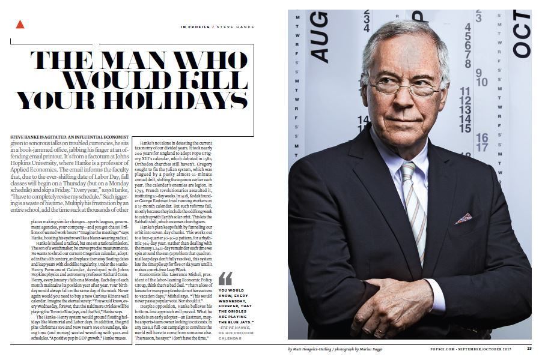

HOME
CALENDAR
TODAY
Q & A
MEDIA
CONTACT
Prof. Hanke and Prof. Henry Propose Worldwide Adoption of Universal Time and the Hanke-Henry Permanent Calendar on CNN's Fareed Zakaria GPS
Hanke-Henry proposal for world adoption of Universal Time featured in the Wall Street Journal's "The Numbers" column
Major Industries Use Coordinated Universal Time. Why Doesn’t Everyone Else?
HHPC in Popular Science Magazine

Articles by Prof. Hanke and Prof. Henry
A Trump calendar, forever?
(Washington Times)
Financial Miscalculations— A Permanent Solution
(Forbes)
Could Donald J. Trump Become America's Caesar?
(Forbes)
It's Time To Change The Calendar, Once And For All
(Forbes)
Is It Time To Change The Clocks?
(Monocle)
What They Didn’t Tell You on the Saudi Road Show
(Zero Hedge)
Changing Times
(Globe Asia)
Taking Calendar Reform Viral
(Globe Asia)
Synchronize Your Watches
(Washington Post)
HHPC and Universal Time in the Press
What you should know about Leap Year, and why two professors want it to stop
(USA Today)
Get rid of leap days and start every year on a Monday
(Baltimore Sun)
Mind the Gaps
(Julius Bär Vision Magazine)
Right down to the wire
(Financial Times)
Time for a New Time?
(WGBH Innovation Hub)
Time to Dump Time Zones
(New York Times)
Vers une heure unique universelle?
(Play RTS)
This Guy Says Getting Rid of Time Zones Will Improve Everyone's Life
(Vice Media)
Why is there a leap day? Is there an alternative?
(The Christian Science Monitor)
Time Zones: What If We Got Rid Of Them?
(Co.EXIST)
Clock keeps ticking on calendar reform, as another leap year passes by
(Al Jazeera America)
Should time zones be SCRAPPED?
(Daily Mail)
Economist Says The World Should Operate On Single Time Zone
(CBS San Francisco)
Has the Internet really made time zones obsolete? Not by a long shot.
(LA Times)
The radical plan to destroy time zones
(Washington Post)
Universal Time: Radical plan to destroy time zones gathers support
(The Independent)
Why the new year starts on Jan. 1, a terrible time for renewal
(Washington Post)
Is tinkering with time bad for your health?
(CNN)
One Time Zone for the World?
(Smithsonian)
Leap Day is today, Feb. 29: This is why we need it
(New York Daily News)
UK pressuring EU to stick with daylight saving time shifts
(Yahoo Finance)
The day of two noons
(The Guardian Nigeria)
The world may soon have only one time zone (and a new calendar)
(Radio 702 South Africa)
In The Zone
(Esquire Middle East)
It’s time to rethink how Time works
(Business Line)
Daylight-saving time is about to an end. It's one of the world's stupidest rituals.
(Business Insider)
This leap day and year would be the last ever if two scholars have their way
(Washington Post)
What Would Happen If We Got Rid of Leap Day?
(Reader's Digest)
New Calendar Would Add Extra Week to December
(National Geographic)
Un nuevo calendario idéntico cada año
(BBC)
An Astrophysicist’s Quest To Reform The Gregorian Calendar
(Huffington Post)
Dump old, impractical calendar, researchers urge
(East Bay Times)
Proposed calendar would make it same exact day, next year
(USA Today)
The Hanke-Henry Permanent Calendar would put us all in one big, happy timezone
(io9)
Professors' proposed calendar synchronizes dates with days
(CNN)
Proposed New Calendar Could Eliminate Financial 'Rip Off' Factor
(Medical Daily)
The Calendar Revolution Begins in Three Days
(WSJ)
Is It Time to Overhaul the Calendar?
(LiveScience)
New calendar proposes to make every year identical - and we'd all save money too
(Daily Mail)
Time for a More Sensible, Permanent Calendar?
(Pacific Standard)
Time for a Change? Johns Hopkins Scholars Say Calendar Needs Serious Overhaul
(Johns Hopkins University )
10 Activities for Learning About Leap Year and Other Calendar Oddities
(NY Times)
Planet Money Episode 918: The Day of Two Noons
(NPR)
Life Would be Simpler with a 13th Month
(Science Illustrated Magazine pp. 50-53)
Proposed New Calendar Would Make Time Rational
(Wired)
Why Aren't We All on the Same Time Zone?
(HowStuffWorks)
What would happen if we abolished time zones altogether?
(Wired)
New Calendar Would Add Extra Week to December
(National Geographic)
Leap year flight of fancy
(The Christian Science Monitor)
Why Calendars Are So Weird, and What Might Be Done About It
(Atlas Obscura)